![]()
domain.polys <- Polygons(list(Polygon(loc.d)), '0')
domainSP <- SpatialPolygons(list(domain.polys))
# Because the mesh is larger than the study area, we need to
# compute the intersection between each polygon
# in the dual mesh and the study area
library(rgeos)
w <- sapply(1:length(dmesh), function(i) {
if (gIntersects(dmesh[i, ], domainSP))
return(gArea(gIntersection(dmesh[i, ], domainSP)))
else return(0)
})
# Projection matrix for the integration points (mesh vertices)
A.int <- Diagonal(nv, rep(1, nv))
# Projection matrix for observed points (event locations)
A.y <- inla.spde.make.A(mesh = mesh, loc = coo)
# Projection matrix for mesh vertices and event locations
A.pp <- rbind(A.int, A.y)
Ap.pp <- inla.spde.make.A(mesh = mesh, loc = coop)
# stack for estimation
stk.e.pp <- inla.stack(tag = "est.pp",
data = list(y = y.pp, e = e.pp),
A = list(1, A.pp),
effects = list(list(b0 = rep(1, nv + n)), list(s = 1:nv)))
# stack for prediction stk.p
stk.p.pp <- inla.stack(tag = "pred.pp",
data = list(y = rep(NA, nrow(coop)), e = rep(0, nrow(coop))),
A = list(1, Ap.pp),
effects = list(data.frame(b0 = rep(1, nrow(coop))),
list(s = 1:nv)))
# stk.full has stk.e and stk.p
stk.full.pp <- inla.stack(stk.e.pp, stk.p.pp)
formula <- y ~ 0 + b0 + f(s, model = spde)
res <- inla(formula, family = 'poisson',
data = inla.stack.data(stk.full.pp),
control.predictor = list(compute = TRUE, link = 1,
A = inla.stack.A(stk.full.pp)),
E = inla.stack.data(stk.full.pp)$e)Flexible Spatial Modelling with inlabru
From Data to Ecological Inference
2026-11-17
Space is inherent to all ecological processes, influencing dynamics such as migration, dispersal, and species interactions. A primary goal in ecology is to understand how these processes shape species distributions and dynamics across space.
Monitoring species distributions
Imagine planning a city without knowing where people live. This is exactly what we risk doing in conservation if we don’t accurately map where species exist—and why.
Monitoring species distributions
Biodiversity monitoring programs have become essential to understand the spatial distribution of species.
The analysis of species distribution data is challenging
Spatial dependency can complicate statistical analysis and, if unaccounted for, it can bias our interpretation of the observed patterns.
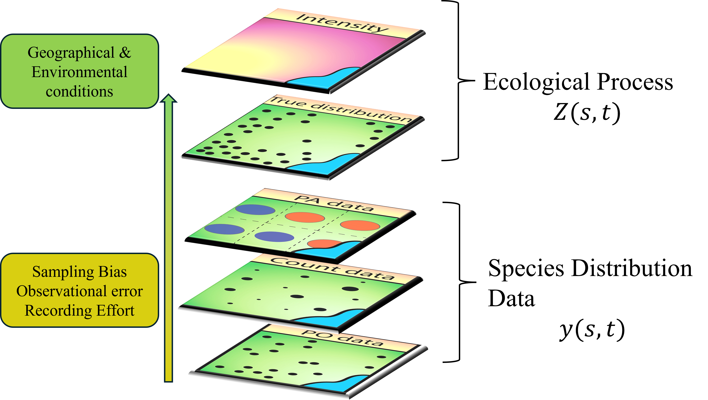
The Challenge of Data
The information available for species distributions models is radically changing
As the volume of recorded ecological data continues to grow, so does the need for computationally efficient methods for fitting complex models.
One major challenge in spatial modelling is translating mathematical models into code
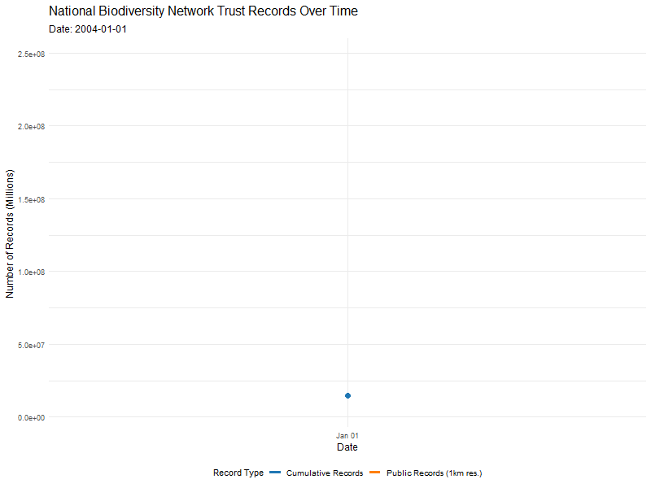
INLA in Ecology
The R-INLA package has become a powerful tool for fitting complex spatial models in ecology.
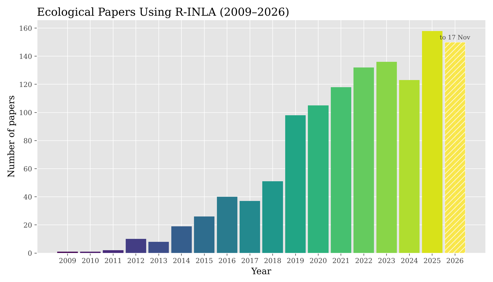
Google scholar search (17/11/2026)
INLA in Ecology
What is INLA and inlabru?
- Short Answer
The Integrated Nested Laplace Approximation (INLA) is a fast method to do Bayesian inference with latent Gaussian models and
inlabruis an R-package that implements this method with a flexible and simple interface.
What is INLA and inlabru?
- Short Answer
The Integrated Nested Laplace Approximation (INLA) is a fast method to do Bayesian inference with latent Gaussian models and
inlabruis an R-package that implements this method with a flexible and simple interface.
- The (much) longer answer
- Rue, H., Martino, S. and Chopin, N. (2009), Approximate Bayesian inference for latent Gaussian models by using integrated nested Laplace approximations. Journal of the Royal Statistical Society: Series B (Statistical Methodology), 71: 319-392.
- Van Niekerk, J., Krainski, E., Rustand, D., & Rue, H. (2023). A new avenue for Bayesian inference with INLA. Computational Statistics & Data Analysis, 181, 107692.
- Lindgren, F., Bachl, F., Illian, J., Suen, M. H., Rue, H., & Seaton, A. E. (2024). inlabru: software for fitting latent Gaussian models with non-linear predictors. arXiv preprint arXiv:2407.00791.
- Lindgren, F., Bolin, D., & Rue, H. (2022). The SPDE approach for Gaussian and non-Gaussian fields: 10 years and still running. Spatial Statistics, 50, 100599.
Latent Gaussian Models … with an example
Most commonly used models are actually LGMs (e.g., LM,LMM, GLM, GAM,etc)
A LGM consists of three elements:
Latent Gaussian Models … with an example
Most commonly used models are actually LGMs (e.g., LM,LMM, GLM, GAM,etc)
A LGM consists of three elements:
- The observation model \(\pi(\mathbf{y}|\eta,\theta) = \prod_{i=1}^n \pi(y_i|\eta_,\theta)\)
The data generating process
\[\begin{aligned} y_i &\sim \mathcal{N}(\mu_i,\sigma_\epsilon^{2})\\ \eta_i &= \mu_i = \beta_0 + \beta_1 x_i \end{aligned}\]
Latent Gaussian Models … with an example
Most commonly used models are actually LGMs (e.g., LM,LMM, GLM, GAM,etc)
A LGM consists of three elements:
The observation model \(\pi(\mathbf{y}|\eta,\theta) = \prod_{i=1}^n \pi(y_i|\eta_,\theta)\)
The latent Gaussian field \(\pi(\mathbf{u}|\theta)\)
The dependence structure
\[\begin{aligned} \begin{bmatrix} \beta_0 \\ \beta_1 \end{bmatrix} &\sim \mathcal{N}\left(\mathbf{0},\mathrm{Q}^{-1} \right)\\ \mathrm{Q} & = \begin{bmatrix} \tau_{\beta_0} & 0 \\ 0 & \tau_{\beta_1} \end{bmatrix} \end{aligned}\]
Latent Gaussian Models … with an example
Most commonly used models are actually LGMs (e.g., LM,LMM, GLM, GAM,etc)
A LGM consists of three elements:
The observation model \(\pi(\mathbf{y}|\eta,\theta) = \prod_{i=1}^n \pi(y_i|\eta_,\theta)\)
The latent Gaussian field \(\pi(\mathbf{u}|\theta)\)
a vector of non-Gaussian hyperparameters \(\theta\)
\[\tau_{\epsilon} = 1/ \sigma_\epsilon^{2}\]
Latent Gaussian Models … with an example
Most commonly used models are actually LGMs (e.g., LM,LMM, GLM, GAM,etc)
A LGM consists of three elements:
The observation model \(\pi(\mathbf{y}|\eta,\theta) = \prod_{i=1}^n \pi(y_i|\eta_,\theta)\)
The latent Gaussian field \(\pi(\mathbf{u}|\theta)\)
a vector of non-Gaussian hyperparameters \(\theta\)
The characteristic property is that the latent part of the hierarchical model is Gaussian, where the expected value is 0 and the precision matrix is Q.
We can use INLA to compute \(\pi(\mathbf{u},\theta|\mathbf{y}) \propto \pi(\mathbf{y}|\mathbf{u},\theta)\pi(\mathbf{u}|\theta)\pi(\theta)\)
Real-world datasets are more complicated!
Data can have several dependence structures: temporal, spatial,…
Using a Bayesian framework:
- Build (hierarchical) models to account for potentially complicated dependency structures in the data.
- Attribute uncertainty to model parameters and latent variables using priors.
Need computationally efficient methods to calculate posteriors (this is where INLA and R-INLA helps!).
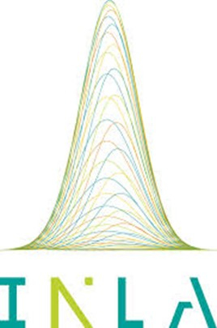
Why inlabru?
- Fitting spatial models in
R-INLAinterface can be cumbersome for new (and even experienced) users!
Why inlabru?
- Fitting spatial models in
R-INLAinterface can be cumbersome for new (and even experienced) users! - In many cases, complicated spatial models are just special cases of the same model structure!!
- Stage 1: What is the distribution of the responses?
- Stage 2: What are the model components? and what is their distribution?
- Stage 3: What are our prior beliefs about the parameters controlling the components in the model?
domain.polys <- Polygons(list(Polygon(loc.d)), '0')
domainSP <- SpatialPolygons(list(domain.polys))
# Because the mesh is larger than the study area, we need to
# compute the intersection between each polygon
# in the dual mesh and the study area
library(rgeos)
w <- sapply(1:length(dmesh), function(i) {
if (gIntersects(dmesh[i, ], domainSP))
return(gArea(gIntersection(dmesh[i, ], domainSP)))
else return(0)
})
# Projection matrix for the integration points (mesh vertices)
A.int <- Diagonal(nv, rep(1, nv))
# Projection matrix for observed points (event locations)
A.y <- inla.spde.make.A(mesh = mesh, loc = coo)
# Projection matrix for mesh vertices and event locations
A.pp <- rbind(A.int, A.y)
Ap.pp <- inla.spde.make.A(mesh = mesh, loc = coop)
# stack for estimation
stk.e.pp <- inla.stack(tag = "est.pp",
data = list(y = y.pp, e = e.pp),
A = list(1, A.pp),
effects = list(list(b0 = rep(1, nv + n)), list(s = 1:nv)))
# stack for prediction stk.p
stk.p.pp <- inla.stack(tag = "pred.pp",
data = list(y = rep(NA, nrow(coop)), e = rep(0, nrow(coop))),
A = list(1, Ap.pp),
effects = list(data.frame(b0 = rep(1, nrow(coop))),
list(s = 1:nv)))
# stk.full has stk.e and stk.p
stk.full.pp <- inla.stack(stk.e.pp, stk.p.pp)
formula <- y ~ 0 + b0 + f(s, model = spde)
res <- inla(formula, family = 'poisson',
data = inla.stack.data(stk.full.pp),
control.predictor = list(compute = TRUE, link = 1,
A = inla.stack.A(stk.full.pp)),
E = inla.stack.data(stk.full.pp)$e)Why inlabru?
Fitting spatial models in
R-INLAinterface can be cumbersome for new (and even experienced) users!In many cases, complicated spatial models are just special cases of the same model structure!!
- Stage 1: What is the distribution of the responses?
- Stage 2: What are the model components? and what is their distribution?
- Stage 3: What are our prior beliefs about the parameters controlling the components in the model?
inlabrukeeps a consistent workflow no matter how complicated your model is
# Step 1. Define model components
cmp <- component_1(...) +
component_2(...) + ...
# Step 2. Define the model predictor
pred <- geometry ~ component_1 + component_2 + ...
# Step 3. Build the observation model
lik <- bru_obs(formula = pred,
family = "cp" ,
data = sf_object ,
...)
# Step 4. Fit the model
fit <- fit <- bru(comps, lik, ...)Why inlabru?
In summary
Consistent workflow and user-friendly interface.
Facilitate spatial modelling and prediction using integrated nested Laplace approximation
Support of commonly used spatial data formats like
sfandterraExtends
R-INLAfunctionality to more general nonlinear predictor expressions via a fixed point iteration scheme.
- It is named after Scotland’s favorite soft drink
Determining the scale effects of landscape variables
Scale effect in Ecology
Landscape studies often explore the impact of surrounding landscapes on abiotic or biotic responses at specific locations (selected for their differing landscape features).
A key challenge in these studies is to identify the spatial scale at which these landscape factors affect the response variable.
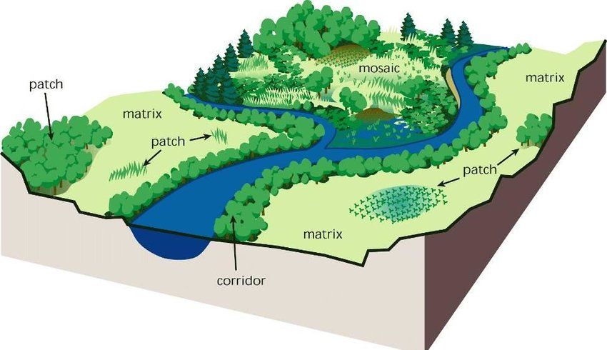
Methods for determining scale effect
The two most commonly used methods for estimating landscape effects are threshold and distance-weighted methods.
Threshold methods compare landscape variables across multiple buffer sizes centred at specific habitat patches, and then select the scale that best fits the data.
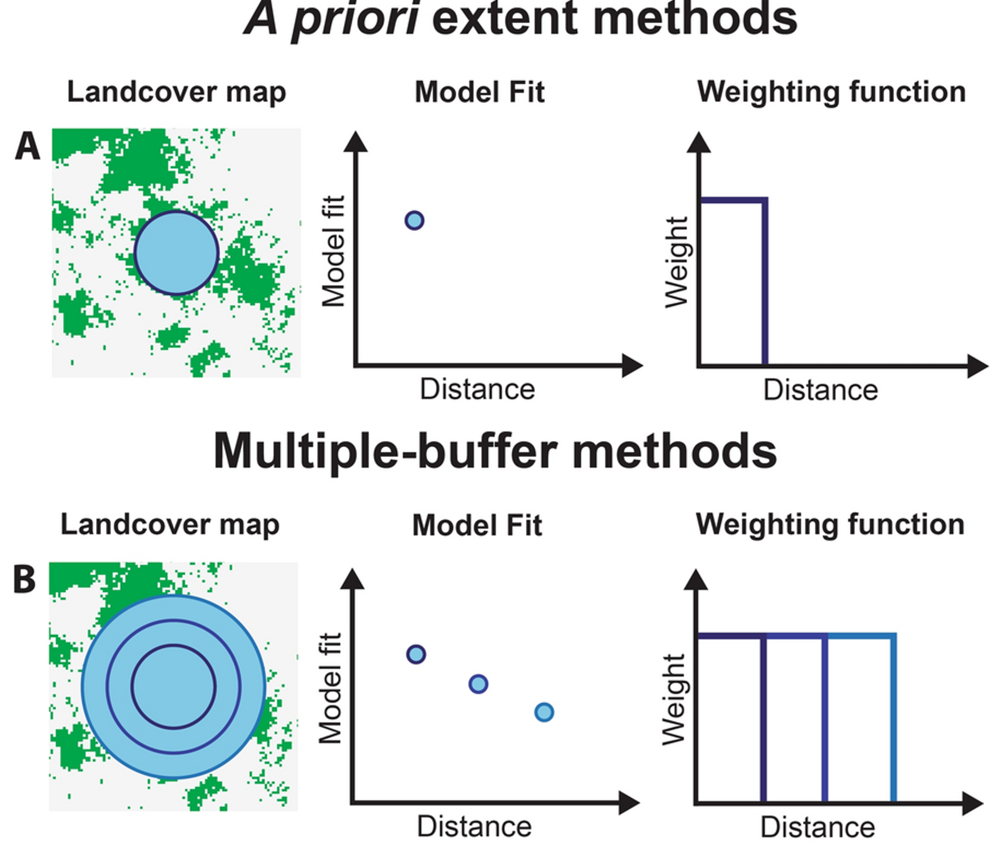
Modified from Lowe et al. (2022)
Methods for determining scale effect
The two most commonly used methods for estimating landscape effects are threshold and distance-weighted methods.
Threshold methods compare landscape variables across multiple buffer sizes centred at specific habitat patches, and then select the scale that best fits the data.
There are several issues with this approach:
- Choosing the maximum and minimum buffer sizes and the number of buffers to evaluate
- The larger the number of buffers to evaluate, the more models we need to fit leading to inflated Type 1 errors
- High degree of spatial autocorrelation between buffers
- Assume an uniform effect of the landscape features within a buffer
Methods for determining scale effect
The two most commonly used methods for estimating landscape effects are threshold and distance-weighted methods.
Distance-weighted methods assign continuous weights to landscape variables, giving greater importance to areas nearer to the study sites and less to those farther away.
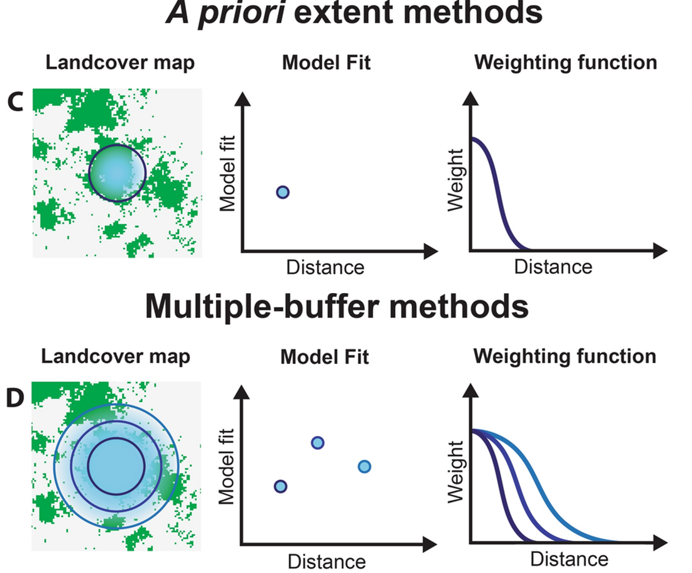
Modified from Lowe et al. (2022)
The Kernel function
Distance-weighted summarise landscape variables by calculating a weighted average, where the weights \(w\) are determined using a known kernel function.
These kernels are defined by the distance between the sample location \(i\) and the surrounding locations.
Usually an exponential or a Gaussian kernel are assumed for the shape of \(w(\cdot)\) e.g.,
\[w(\mathbf{s}_i,\mathbf{s}_j,\sigma) = \dfrac{\mathrm{exp(-||\mathbf{s}_i-\mathbf{s}_j||^2/2\sigma^2)}}{\sum_{i\neq j} \mathrm{exp}(-||\mathbf{s}_i-\mathbf{s}_j||^2/2\sigma^2)}\]
- \(\sigma\), the scale parameter, describes how rapidly the effects of the landscape variables decline with the Euclidean distance between locations.
- Smaller \(\sigma\) values indicate that nearby locations have a larger weight, whereas large \(\sigma\) place large weights on distant values of the covariate(s) of interest. The goal is then to estimate \(\{\beta,\sigma,u_i\}\).
The Kernel function
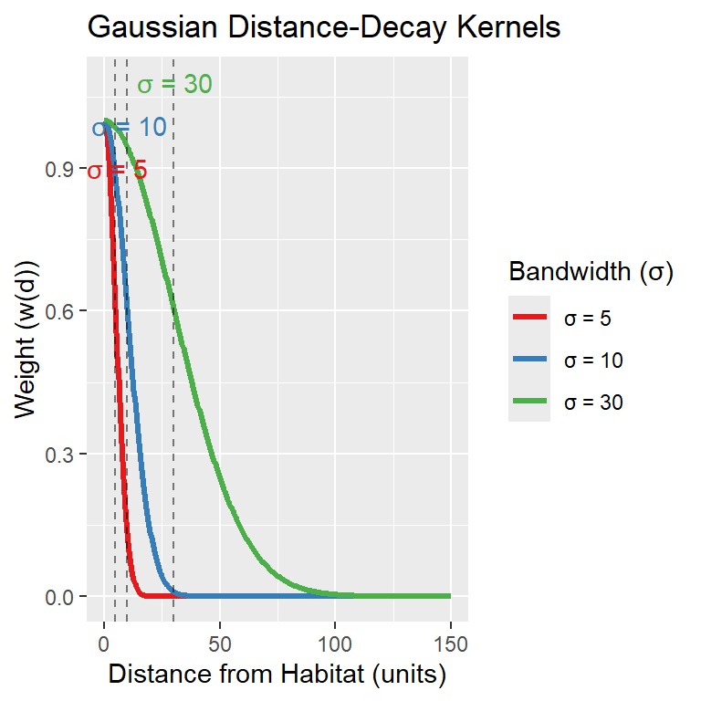
Species distribution model
A simple species distribution model can be specified as follows:
\[\begin{aligned} y_i &\sim \mathrm{Bernoulli}(\theta_i) \\ \log \left(\frac{\theta_i}{1 - \theta_i} \right) &= \beta_0+ \sum_{k\in K} \beta_k s_k(x^k(\mathbf{s}_i,\sigma)) + u_i , \\ s_k(x^k(\mathbf{s}_i,\sigma)) & = \sum_{i\neq j} x^k(\mathbf{s}_j)w(\mathbf{s}_i,\mathbf{s}_j,\sigma) \end{aligned}\]
\(s_k(z^k(\mathbf{x}_i,\sigma))\) is the weighted average of the \(k\)th landscape variable \(z^k\) with weights \(w(\cdot)\) and \(\beta^k\) are the effects of such spatially weighted variables.
We just need one extra step for estimating \(\sigma\) , for which we can use the iterated INLA linearisation step in
inlabru.
Simulation Study
Simulation study and comparing the results from fitting model with inlabru against an MLE approach (Chandler and Hepinstall-Cymerman 2016).
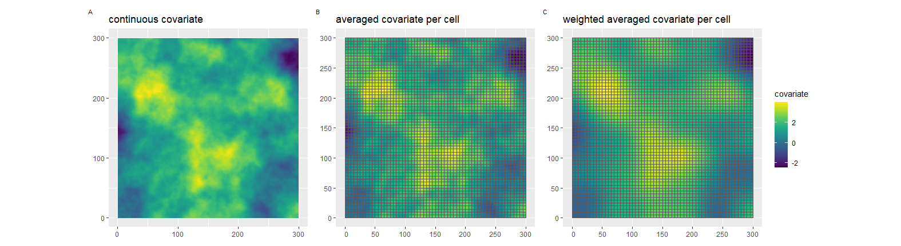
Simulation Study
Simulation study and comparing the results from fitting model with inlabru against an MLE approach (Chandler and Hepinstall-Cymerman 2016).
Simulated true presence-absence data according to the following occupancy probabilities:
\[\mathrm{logit}(\psi_i) = \beta_0 + \beta_1 \times f(x(\mathbf{s}_i,\sigma))\]
Survey data consist of a random sample of 10% of the total grid cells ( \(n=360\) ) where the true presence/absence data are recorded.
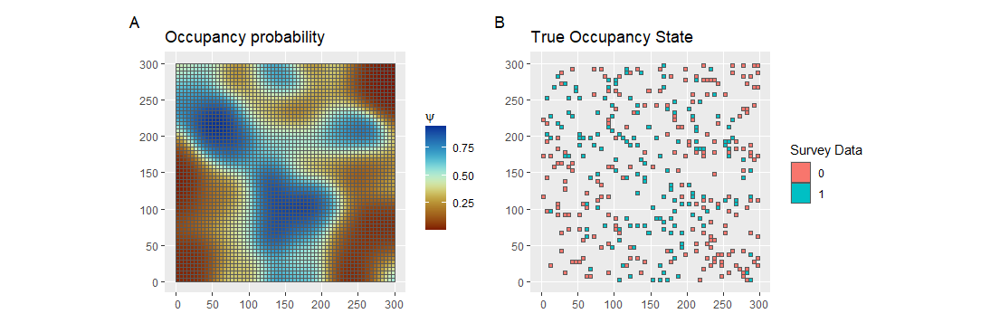
Simulation Study
Simulation study and comparing the results from fitting model with inlabru against an MLE approach (Chandler and Hepinstall-Cymerman (2016)).
Results
| Parameter | True | MLE | inlabru |
|---|---|---|---|
| \(\beta_0\) | -3 | -3.11 | -2.96 |
| \(\beta_1\) | 1.5 | 1.58 | 1.5 |
| \(\sigma\) | 15 | 14.1 | 13.88 |
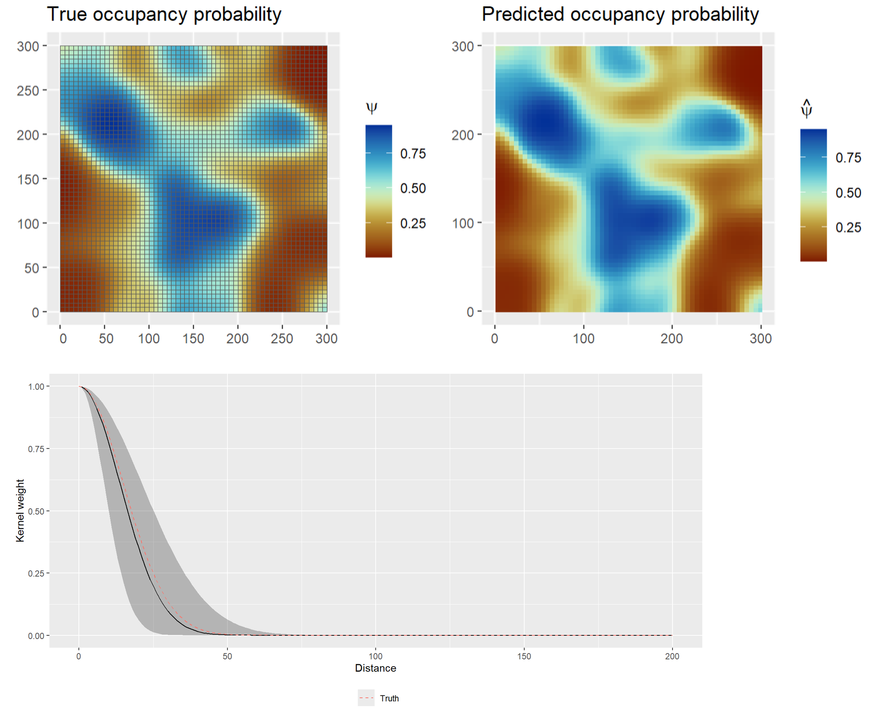
What do we gain with inlabru?
Several R packages now facilitate the analysis of landscape effects
| Package | Data format support | Buffer scale analysis | Distance weighted analysis | Spatial random effects | Account for observational processess |
|---|---|---|---|---|---|
multilandr |
terra rasters |
✅ | ❌ | ❌ | ❌ |
siland |
sf shapefiles |
✅ | ✅ | ❌ | ❌ |
scalescape |
terra rasters |
❌ | ✅ | ✅ | ❌ |
What do we gain with inlabru?
Several R packages now facilitate the analysis of landscape effects
| Package | Data format support | Buffer scale analysis | Distance weighted analysis | Spatial random effects | Account for observational processess |
|---|---|---|---|---|---|
multilandr |
terra rasters |
✅ | ❌ | ❌ | ❌ |
siland |
sf shapefiles |
✅ | ✅ | ❌ | ❌ |
scalescape |
terra rasters |
❌ | ✅ | ✅ | ❌ |
inlabru |
terra and sf |
- Support of different landscape data formats (rasters or shapefiles)
What do we gain with inlabru?
Several R packages now facilitate the analysis of landscape effects
| Package | Data format support | Buffer scale analysis | Distance weighted analysis | Spatial random effects | Account for observational processess |
|---|---|---|---|---|---|
multilandr |
terra rasters |
✅ | ❌ | ❌ | ❌ |
siland |
sf shapefiles |
✅ | ✅ | ❌ | ❌ |
scalescape |
terra rasters |
❌ | ✅ | ✅ | ❌ |
inlabru |
terra and sf |
✅ | ✅ |
Support of different landscape data formats (rasters or shapefiles)
Provides flexibility with user-defined kernel functions (defined as regular r expressions)
What do we gain with inlabru?
Several R packages now facilitate the analysis of landscape effects
| Package | Data format support | Buffer scale analysis | Distance weighted analysis | Spatial random effects | Account for observational processess |
|---|---|---|---|---|---|
multilandr |
terra raster |
✅ | ❌ | ❌ | ❌ |
siland |
sf shapefiles |
✅ | ✅ | ❌ | ❌ |
scalescape |
terra raster |
❌ | ✅ | ✅ | ❌ |
inlabru |
terra and sf |
✅ | ✅ | ✅ |
Support of different landscape data formats (rasters or shapefiles)
Provides flexibility with user-defined kernel functions (defined as regular r expressions)
Capabilities to fit explicit spatial or spatio-temporal models
What do we gain with inlabru?
Several R packages now facilitate the analysis of landscape effects
| Package | Data format support | Buffer scale analysis | Distance weighted analysis | Spatial random effects | Account for observational processess |
|---|---|---|---|---|---|
multilandr |
terra rasters |
✅ | ❌ | ❌ | ❌ |
siland |
sf shapefiles |
✅ | ✅ | ❌ | ❌ |
scalescape |
terra rasters |
❌ | ✅ | ✅ | ❌ |
inlabru |
terra and sf |
✅ | ✅ | ✅ | ✅ |
Support of different landscape data formats (rasters or shapefiles)
Provides flexibility with user-defined kernel functions (defined as regular r expressions)
Capabilities to fit explicit spatial or spatio-temporal models
Multiple response types (e.g, binary, counts, continuous).
Account for complex observational processes (e.g., imperfect detection)
What do we gain with inlabru?
Several R packages now facilitate the analysis of landscape effects
| Package | Data format support | Buffer scale analysis | Distance weighted analysis | Spatial random effects | Account for observational processess |
|---|---|---|---|---|---|
multilandr |
terra rasters |
✅ | ❌ | ❌ | ❌ |
siland |
sf shapefiles |
✅ | ✅ | ❌ | ❌ |
scalescape |
terra rasters |
❌ | ✅ | ✅ | ❌ |
inlabru |
terra and sf |
✅ | ✅ | ✅ | ✅ |
Support of different landscape data formats (rasters or shapefiles)
Provides flexibility with user-defined kernel functions (defined as regular r expressions)
Capabilities to fit explicit spatial or spatio-temporal models
Multiple response types (e.g, binary, counts, continuous).
Account for complex observational processes (e.g., imperfect detection)
Combining multiple data sources?
Combining efforts: Integrating multiple Data sources for modelling species distributions
The new era of biodiversity data
The rise of new technologies and data submission platforms have provided access to multiple data sources
New opportunities for studying the spatial distributions of wildlife populations.
Datasets are typically designed with a particular goal in mind.
Planned Structured Survey Data
- Planned Surveys produce structured data which involves constant monitoring schemes using standardised methods at sites on a regular basis.
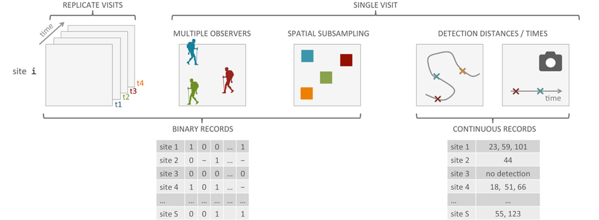
Figure modified from (Guillera-Arroita 2016)
Planned Structured Survey Data
Planned Surveys produce structured data which involves constant monitoring schemes using standardised methods at sites on a regular basis.
These are expensive to collect and tend to be geographically and temporally restricted.
Citizen Science Unstructured Data
Unstructured data constitute the majority of available information.
- Citizen science projects offer a cost-effective solution to investigate species distributions at large spatial and temporal scales.
Citizen Science Data
Unstructured data constitute the majority of available information.
- Citizen science projects offer a cost-effective solution to investigate species distributions at large spatial and temporal scales.
- Harnessing the power of CS data is not an easy task!
| Advantages 😄👍 | Disadvantages 😔👎 |
|---|---|
| Extensive taxonomic, spatial and temporal coverage. | Under-reporting of rare and inconspicuous species. |
| Eye-catching species that are easily identifiable by participants. | Varying recording skills and uneven sampling effort. |
Data Integration
How can we combine the information from different data sources?
- Data integration: aims to describe explicitly the differences in how datasets were assembled by using distinct observation submodels for each data source.
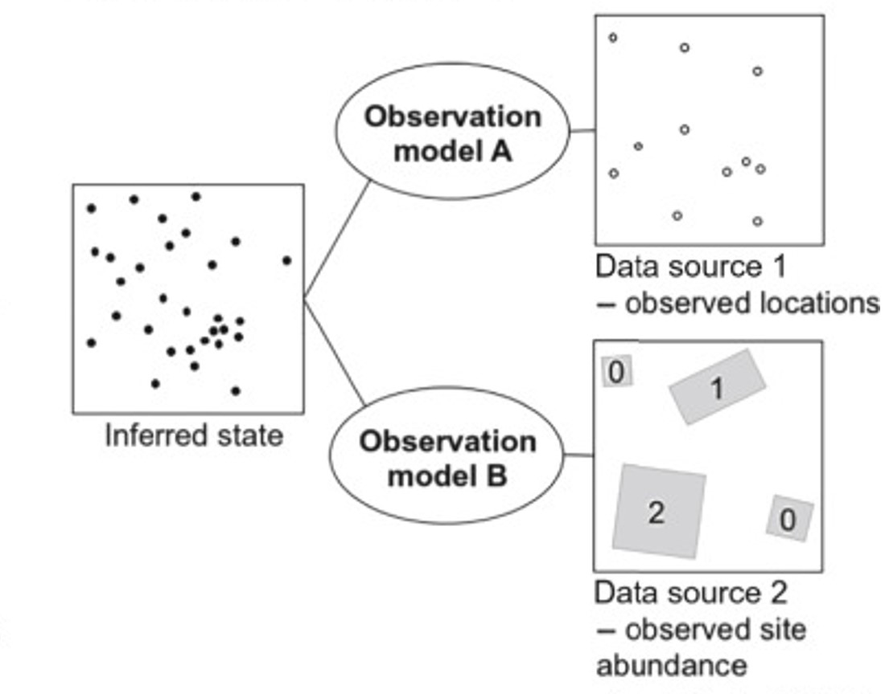
Obtained from (Isaac et al. 2020)
Data Integration
How can we combine the information from different data sources?
Data integration: aims to describe explicitly the differences in how datasets were assembled by using distinct observation submodels for each data source.
Combining different data sources is challenging due to differences in study design, spatial and temporal coverage, and potential sampling biases.
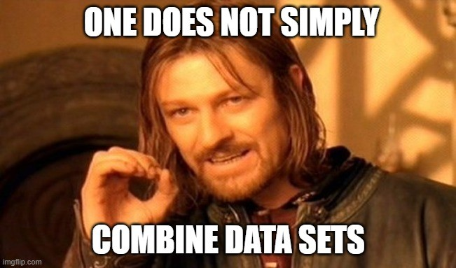
Sampling Bias in CS opportunistic data
Large volumes of CS data come from Opportunistic surveys where sampling effort is biased across space and time.
- People visit more certain places than others.
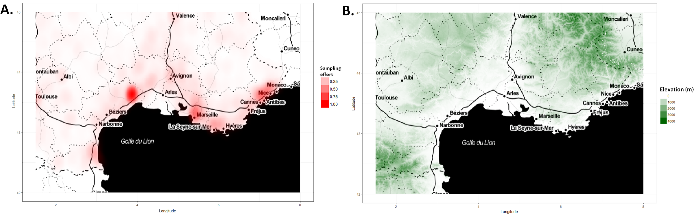
Elevation versus sampling effort (obtained through the Pl@net Net App) in the French mediterranean region (Figure taken from Botella et al. (2020)).
Small populations at lower elevation could be over-sampled.
If we assume sampling is evenly distributed, species occupancy at higher elevation would be under-estimated
Thinned point process model
- The true locations \(\mathbf{s}=s_1,\ldots,s_m\) where a species occur are a realization of a Point Process, specifically a log-Gaussian Cox process (LGCP).
\[\lambda(s)=\exp\{X(s)'\beta + Z(s)\}\]
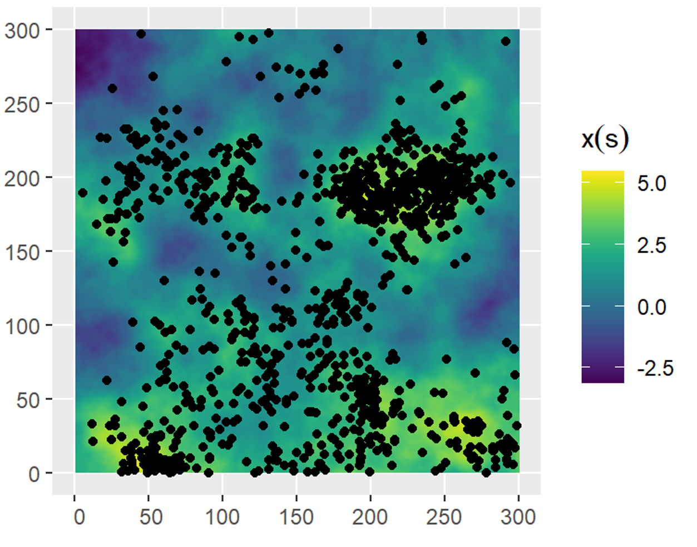
Thinned point process model
- The true locations \(\mathbf{s}=s_1,\ldots,s_m\) where a species occur are a realization of a Point Process, specifically a log-Gaussian Cox process (LGCP).
- The true point pattern is partially observed due to imperfect detection and accessibility constrains reflected by an uneven sampling effort.
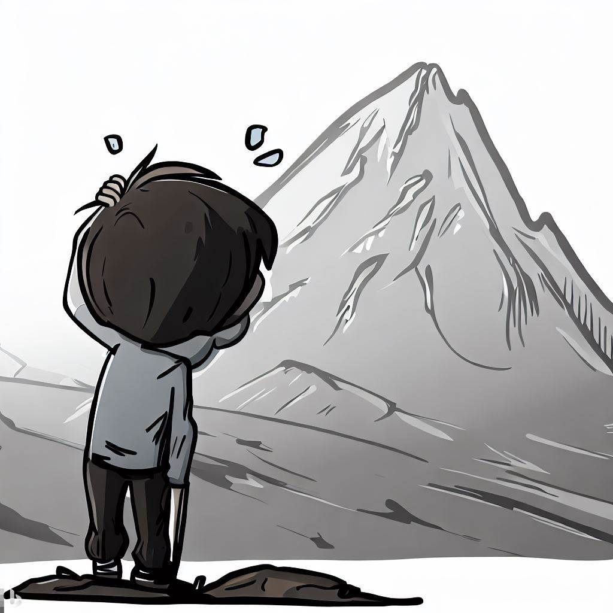
Thinned point process model
- The true locations \(\mathbf{s}=s_1,\ldots,s_m\) where a species occur are a realization of a Point Process, specifically a log-Gaussian Cox process (LGCP).
- The true point pattern is partially observed due to imperfect detection and accessibility constrains reflected by an uneven sampling effort
- The locations \(\mathbf{s}=s_1,\ldots,s_n\) where opportunistic encounters have actually occurred are the result of a thinned point process.
\[\begin{aligned} \lambda^{pp}(s)&=\lambda(s)\times p(s)\\ \text{logit}(p(s)) &= \alpha^{pp}_0 + \alpha^{pp}_1\times g(s) + \ldots \end{aligned}\]
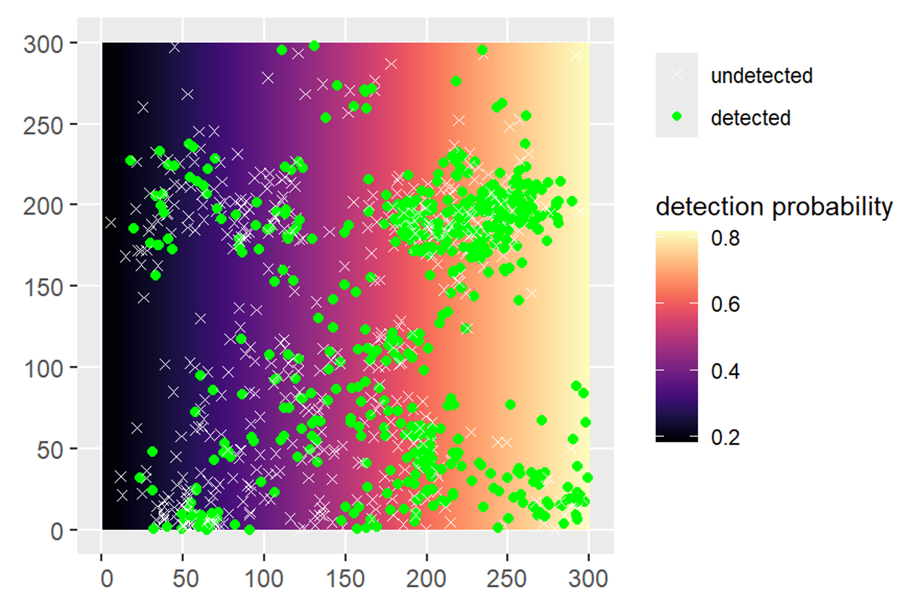
Estimation of the thinned point process model
The likelihood function for the thinned point process is given by:
\[L_{thinn}(\beta,\alpha) = \exp\left\{\int_B\lambda(s) p(s) ds)\right\}\prod_i^m \lambda(s_i)p(s_i)\]
Simpson et al. (2016) proposed an approach to approximate both the stochastic integral and the evaluation of the field at the data points using INLA.
In
R-INLAwe can defined different model components as part of the additive predictor.inlabruallows the predictor to be a non-linear function of the parameter vector through an iterative model fitting scheme.We can use
inlabrufixed point iteration method to estimate thinning probabilities \(p(s)\).
The problem with detection
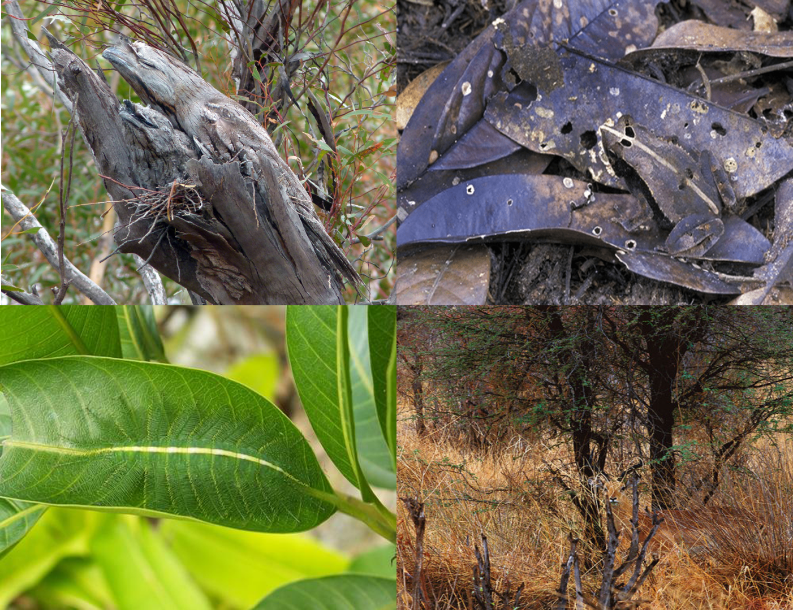
The problem with detection
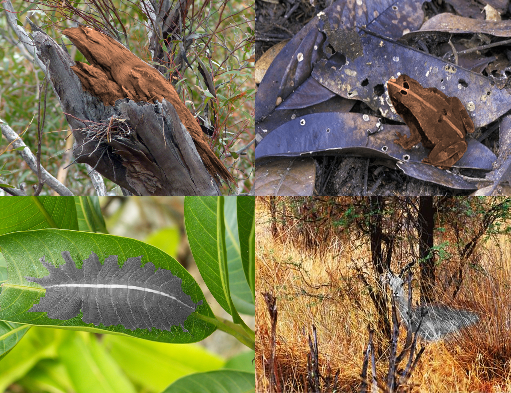
Possible biases due to imperfect detection
Underestimation of species distribution
Bias of the estimated relationship with covariates
Predictive models might reflect detection instead of occurrence
The Occupancy model for survey data
Basic idea: Data contain information about two processes.
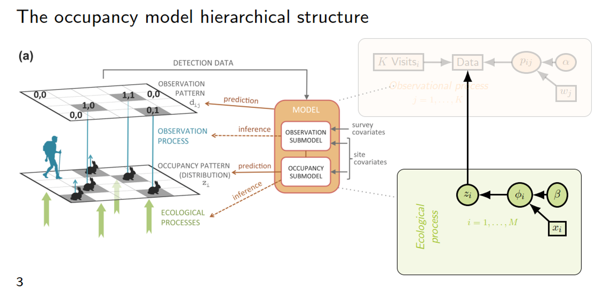
The Occupancy model for survey data
Basic idea: Data contain information about two processes.
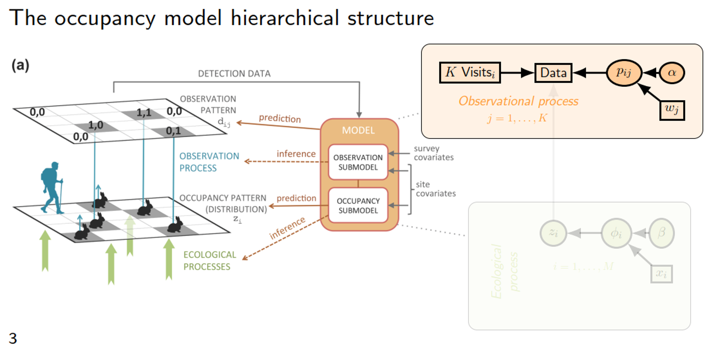
Occupancy Models in INLA
For a set of set of \(M\) discrete sites, let the detection history of the \(i\)th site \(\mathbf{d}_i= y_{i1},\ldots,y_{iK}\).
The joint likelihood is then:
\[ L(\pmb{\psi},\textbf{p}|\mathbf{y}_1,\ldots,\mathbf{y}_M) = \underbrace{\prod_{i=1}^{m} \left[\psi_i \prod_j^{K_i} p_{ij}^{y_{ij}} (1-p_{ij})^{1-y_{ij}}\right]}_{\text{sites with at least one detection}}\underbrace{\prod_{i=m+1}^M\left[\psi_i\prod_j^{K_i}(1-p_{ij})+(1-\psi_i)\right]}_{\text{sites with only 0's}}.\]
The likelihood for occupancy model is factorized into univariate models for the marginal distribution of each site detection history.
\[ L(\pmb{\psi},\textbf{p}|\mathbf{y}_1,\ldots,\mathbf{y}_M) = \prod_{i=1}^{M} \left[\psi_i \prod_j^{K_i} p_{ij}^{y_{ij}} (1-p_{ij})^{1-y_{ij}} + \mathbb{I}_{\sum_j y_{ij} = 0}(1-\psi_i) \right]\]
Belmont et al. (2024) show how this a LGM (and thus possible to be fitted using INLA ) under some mild conditions.
Integrated Species Distribution Model
- The point process model proposed for CS data is defined on a continuous space, but the occupancy model for survey data is defined in a discretised space.
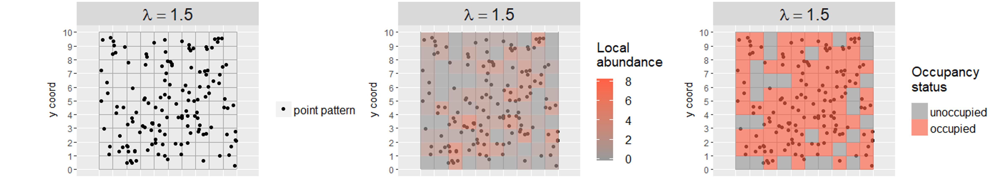
Integrated Species Distribution Model
- The point process model proposed for CS data is defined on a continuous space, but the occupancy model for survey data is defined in a discretised space.
We can use the fact that the number of individuals in a bounded region can be characterized as \(N(A_i)\sim \mathrm{Poisson}(\int_{A_i}\lambda(s)~ds)\).
The probability that an areal unit \(A_i\) is occupied by a species is given by:
\[\psi_i = \mathrm{Pr}\left[N(A_i)>0\right] = 1 - \exp\left(-\int_{A_i}\lambda(s)~ds\right),\]
Integrated Species Distribution Model
The point process model proposed for CS data is defined on a continuous space, but the occupancy model for survey data is defined in a discretised space.
We can use the fact that the number of individuals in a bounded region can be characterized as \(N(A_i)\sim \mathrm{Poisson}(\int_{A_i}\lambda(s)~ds)\).
The probability that an areal unit \(A_i\) is occupied by a species is given by:
\[\psi_i = \mathrm{Pr}\left[N(A_i)>0\right] = 1 - \exp\left(-\int_{A_i}\lambda(s)~ds\right),\]
Thus, the intensity-based OM likelihood becomes:
\[L(\psi_i,p_{ij}) = \left[\prod_i^N \left(1-\exp\left\{-\int_{A_i}\lambda(s) ds\right\}\right)\prod_j^{K_i}p_{ij}^{y_{ij}}(1-p_{ij})^{1-y_{ij}} \right] \times\\ \prod_{i=N+1}^M\left[ \left(1-\exp\left\{\int_{A_i}\lambda(s) ds\right\}\right) \prod_j^{K_i}(1-p_{ij})+\exp\left\{\int_{A_i} \lambda(s)ds\right\} \right].\]
Integrated Species Distribution Model
The marginal distribution of each site detection history is given by
\[ L(\pmb{\psi},\textbf{p}|\mathbf{y}_1,\ldots,\mathbf{y}_M) = \prod_{i=1}^{M} \left[1-\exp\left\{-\int_{A_i}\lambda(s) ds\right\} \prod_j^{K_i} p_{ij}^{y_{ij}} (1-p_{ij})^{1-y_{ij}} + \mathbb{I}_{\sum_j y_{ij} = 0}\exp\left\{\int_{A_i} \lambda(s)ds\right\}\right]\]
In large-scale studies, species distributions are often monitored across relatively small patches.
If we assume a constant intensity within each cell then \(\int_{A_i}\lambda(s)ds = \lambda_i |A_i|\).
Integrated Species Distribution Model
The marginal distribution of each site detection history is given by
\[ L(\pmb{\psi},\textbf{p}|\mathbf{y}_1,\ldots,\mathbf{y}_M) = \prod_{i=1}^{M} \left[1-\exp\left\{-\int_{A_i}\lambda(s) ds\right\} \prod_j^{K_i} p_{ij}^{y_{ij}} (1-p_{ij})^{1-y_{ij}} + \mathbb{I}_{\sum_j y_{ij} = 0}\exp\left\{\int_{A_i} \lambda(s)ds\right\}\right]\]
In large-scale studies, species distributions are often monitored across relatively small patches.
If we assume a constant intensity within each cell then \(\int_{A_i}\lambda(s)ds = \lambda_i |A_i|\).
We can link the occupancy probabilities to the intensity function (\(\psi_i = 1 -\exp(|A_i|\lambda_i)\)) through the cloglog link (\(\mathrm{cloglog}(\psi) =\log[-\log(1-\psi_i)]\))
\[\begin{aligned} \mathrm{cloglog}(\psi_i) &= \log(|A_i|) + \log(\lambda_i) \\ &= \log(|A_i|)+\beta_0 + \sum_{q=1}^P\beta_q x_{iq} + z_i\\ &= \beta_0^* + \sum_{q=1}^P\beta_q x_q(s) + z_i \end{aligned}\]
Integrated Species Distribution Model
The marginal distribution of each site detection history is given by
\[ L(\pmb{\psi},\textbf{p}|\mathbf{y}_1,\ldots,\mathbf{y}_M) = \prod_{i=1}^{M} \left[1-\exp\left\{-\int_{A_i}\lambda(s) ds\right\} \prod_j^{K_i} p_{ij}^{y_{ij}} (1-p_{ij})^{1-y_{ij}} + \mathbb{I}_{\sum_j y_{ij} = 0}\exp\left\{\int_{A_i} \lambda(s)ds\right\}\right]\]
In large-scale studies, species distributions are often monitored across relatively small patches.
If we assume a constant intensity within each cell then \(\int_{A_i}\lambda(s)ds = \lambda_i |A_i|\).
We can link the occupancy probabilities to the intensity function (\(\psi_i = 1 -\exp(|A_i|\lambda_i)\)) through the cloglog link (\(\mathrm{cloglog}(\psi) =\log[-\log(1-\psi_i)]\))
\[\begin{aligned} \mathrm{cloglog}(\psi_i) &= \beta_0^* + \sum_{q=1}^P\beta_q x_q(s) + z_i \end{aligned}\]
- The likelihood of the integrated model becomes \(L_{\text{idm}}(\beta,\alpha,\gamma) = L_{pp}(\beta,\alpha) \times L_{occ}(\beta,\gamma)\)
Case Study: Modelling the Distribution of the black-throated blue warbler in Pennsylvania, USA.
- Occurrence data for the Black-throated blue warbler (Setophaga caerulescens) in Pennsylvania, USA are available from two sources:
The Pennsylvania Breeding Bird Atlas (BBA): Point count surveys collected through a standardized data collection protocol from 2005 to 2008 .
The second data set does not follow a standard data collection protocol, but instead are observations reported by citizen scientists to the eBird platform in 2008.
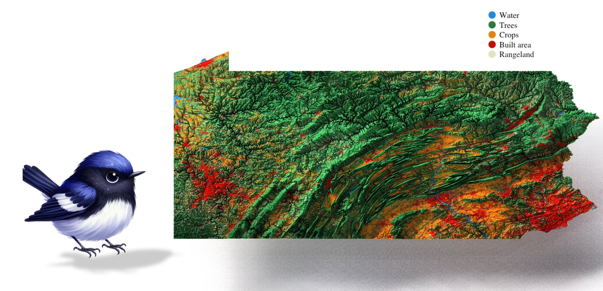
Modelling Black-throated blue warbler: Survey Data
- Detection/non-detection BBA survey data are available in a subregion of the Pennsylvania State.
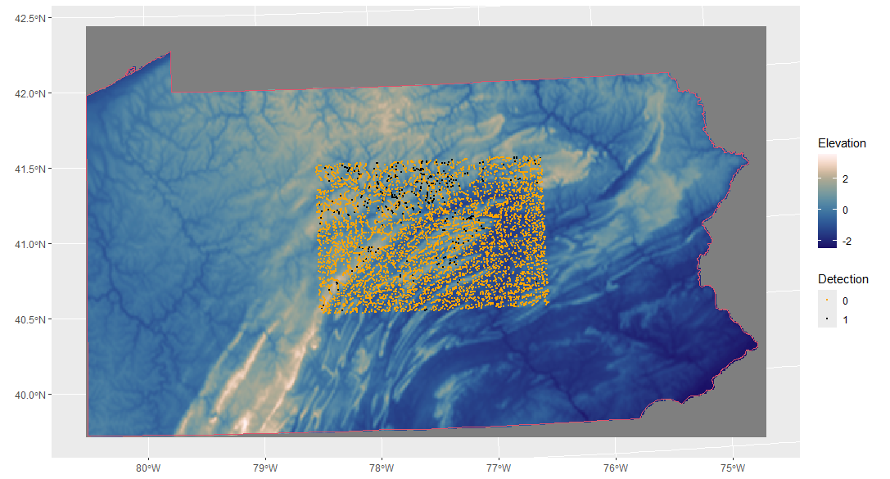
Modelling Black-throated blue warbler: Opportunistic Data
eBirdcitizen science data are usually biased due to uneven sampling effort.- Use the locations where other species have been observed as a proxy of sampling intensity
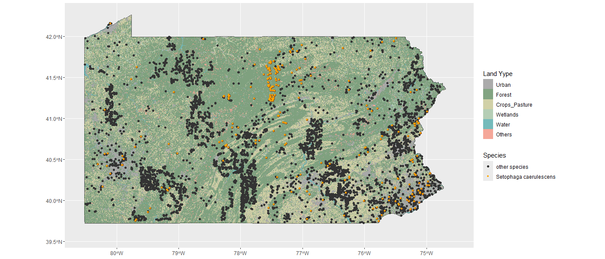
Locations 17 species of birds have been reported to eBird in 2008 along with the number of visits to a given location. The orange points indicate the locations where the Black-throated blue warbler has been observed.
Modelling Black-throated blue warbler: Modeling BBA and eBird together
inlabrufacilitates fitting multi-likelihood models that share a common state-space process parameters but have different observational processes.
\[\begin{aligned} \log(\lambda(s)^{(\text{eBird})}) &= \color{black}{\beta_0} + \color{black}{\beta'X(s)} + \color{black}{Z(s)} + \log(p(s)) \\ \mathrm{logit}(p(s)^{(\text{eBird})}) &= \alpha_0 + \alpha_1 \times \hat{\text{effort}}(s)\\ \mathrm{cloglog}(\psi(s)^{(\text{BBA})}) &= |C_i| + \color{black}{\beta_0} + \color{black}{\beta'X(s)} + \color{black}{Z(s)} \\ \mathrm{logit}(p_{ij}^{(\text{BBA})}) &= \gamma_0 + \gamma_1 \times \text{Canopy} + \gamma_2 \times \text{LDI} \end{aligned}\] - LDI is the land development index proposed by Brown and Vivas (2005). The smaller the index values is, the less the urban development is.
Modelling Black-throated blue warbler: Modeling BBA and eBird together
inlabrufacilitates fitting multi-likelihood models that share a common state-space process parameters but have different observational processes.
\[\begin{aligned} \log(\lambda(s)^{(\text{eBird})}) &= \color{red}{\beta_0} + \color{red}{\beta'X(s)} + \color{red}{Z(s)} + \log(p(s)) \\ \mathrm{logit}(p(s)^{(\text{eBird})}) &= \alpha_0 + \alpha_1 \times \hat{\text{effort}}(s)\\ \mathrm{cloglog}(\psi(s)^{(\text{BBA})}) &= |C_i| + \color{red}{\beta_0} + \color{red}{\beta'X(s)} + \color{red}{Z(s)} \\ \mathrm{logit}(p_{ij}^{(\text{BBA})}) &= \gamma_0 + \gamma_1 \times \text{Canopy} + \gamma_2 \times \text{LDI} \end{aligned}\] - LDI is the land development index proposed by Brown and Vivas (2005). The smaller the index values is, the less the urban development is.
Modelling Black-throated blue warbler: Modeling BBA and eBird together
inlabrufacilitates fitting multi-likelihood models that share a common state-space process parameters but have different observational processes.
components_idm = ~ Intercept(1) +
elevation(elevation_raster, model = "linear") +...+ spatial_field(geometry, model=matern) +
alpha_0(1,mean.linear= 3, prec.linear= 1/2.72) + alpha_1(1,mean.linear =1, prec.linear= 1/2.72)
formula_occ = inla.mdata(Y, X) ~ log(.data.$radius) + Intercept + elevation + ... + spatial_field
formula_thinn = geometry ~ Intercept + elevation + ...+ spatial_field +
log_detect(xy = geometry,p1 = alpha_0, p2 = alpha_1)
lik_occ = bru_obs(formula = formula_occ,
family = "occupancy",
data = bba_sf,
response_data = list(X = X_mat,Y = Y_mat),
control.family = list(control.link = list(model = "cloglog"),
link.simple = "logit"))
lik_thinn = bru_obs("cp",
formula = formula_thinn ,
data = ebird_sf ,
samplers = penn_state,
domain = list(geometry = mesh))
fit_IDM = bru(components_idm , lik_occ , lik_thinn)Modelling Black-throated blue warbler: Modeling BBA and eBird together
inlabrufacilitates fitting multi-likelihood models that share a common state-space process parameters but have different observational processes.
components_idm = ~ Intercept(1) +
elevation(elevation_raster, model = "linear") +...+ spatial_field(geometry, model=matern) +
alpha_0(1,mean.linear= 3, prec.linear= 1/2.72) + alpha_1(1,mean.linear =1, prec.linear= 1/2.72)
formula_occ = inla.mdata(Y, X) ~ log(.data.$radius) + Intercept + elevation + ... + spatial_field
formula_thinn = geometry ~ Intercept + elevation + ...+ spatial_field +
log_detect(xy = geometry,p1 = alpha_0, p2 = alpha_1)
lik_occ = bru_obs(formula = formula_occ,
family = "occupancy",
data = bba_sf,
response_data = list(X = X_mat,Y = Y_mat),
control.family = list(control.link = list(model = "cloglog"),
link.simple = "logit"))
lik_thinn = bru_obs("cp",
formula = formula_thinn ,
data = ebird_sf ,
samplers = penn_state,
domain = list(geometry = mesh))
fit_IDM = bru(components_idm , lik_occ , lik_thinn)Modelling Black-throated blue warbler: Modeling BBA and eBird together
inlabrufacilitates fitting multi-likelihood models that share a common state-space process parameters but have different observational processes.
components_idm = ~ Intercept(1) +
elevation(elevation_raster, model = "linear") +...+ spatial_field(geometry, model=matern) +
alpha_0(1,mean.linear= 3, prec.linear= 1/2.72) + alpha_1(1,mean.linear =1, prec.linear= 1/2.72)
formula_occ = inla.mdata(Y, X) ~ log(.data.$radius) + Intercept + elevation + ... + spatial_field
formula_thinn = geometry ~ Intercept + elevation + ...+ spatial_field +
log_detect(xy = geometry,p1 = alpha_0, p2 = alpha_1)
lik_occ = bru_obs(formula = formula_occ,
family = "occupancy",
data = bba_sf,
response_data = list(X = X_mat,Y = Y_mat),
control.family = list(control.link = list(model = "cloglog"),
link.simple = "logit"))
lik_thinn = bru_obs("cp",
formula = formula_thinn ,
data = ebird_sf ,
samplers = penn_state,
domain = list(geometry = mesh))
fit_IDM = bru(components_idm , lik_occ , lik_thinn)Modelling Black-throated blue warbler: Modeling BBA and eBird together
inlabrufacilitates fitting multi-likelihood models that share a common state-space process parameters but have different observational processes.
components_idm = ~ Intercept(1) +
elevation(elevation_raster, model = "linear") +...+ spatial_field(geometry, model=matern) +
alpha_0(1,mean.linear= 3, prec.linear= 1/2.72) + alpha_1(1,mean.linear =1, prec.linear= 1/2.72)
formula_occ = inla.mdata(Y, X) ~ log(.data.$radius) + Intercept + elevation + ... + spatial_field
formula_thinn = geometry ~ Intercept + elevation + ...+ spatial_field +
log_detect(xy = geometry,p1 = alpha_0, p2 = alpha_1)
lik_occ = bru_obs(formula = formula_occ,
family = "occupancy",
data = bba_sf,
response_data = list(X = X_mat,Y = Y_mat),
control.family = list(control.link = list(model = "cloglog"),
link.simple = "logit"))
lik_thinn = bru_obs("cp",
formula = formula_thinn ,
data = ebird_sf ,
samplers = penn_state,
domain = list(geometry = mesh))
fit_IDM = bru(components_idm , lik_occ , lik_thinn)Results Integrated Model: posterior summaries
| Parameter | Posterior mean and 95% CrIs |
|---|---|
| Intercept (\(\beta_0\)) | -3.97 (-5.37,-1.61) |
| Canopy (\(\beta_1\)) | 0.87 (0.65,1.08) |
| Elevation (\(\beta_3\)) | 1.12 (0.93,1.3) |
| Slope (\(\beta_4\)) | 0.07 (-0.03,0.17) |
| Aspect (\(\beta_5\)) | -0.13 (-0.24,-0.03) |
| Intercept - detection eBird (\(\alpha_0\)) | 2.55 (1.67,3.44) |
| Effort (\(\alpha_1\)) | 1.46 (1.22,1.7) |
| Intercept - detection BBA (\(\gamma_0\))s | 0.93 (0.37,1.5) |
| Canopy (\(\gamma_1\)) | 0.31 (-0.14,0.76) |
| LDI (\(\gamma_1\)) | 0.68 (0.13,1.23) |
| \(\rho_z\) | 129.82 (79.92,211.03) |
| \(\sigma_z\) | 2.04 (1.47,2.82) |
Results Integrated Model: Predictions
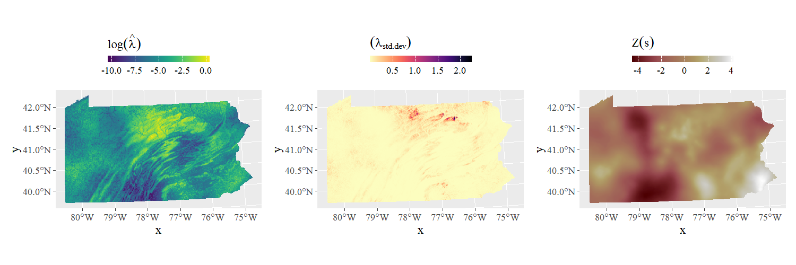
Discussion
- Over the last decade there has been bloom in the development of tools for fitting ISDMs (with quite a few wrappers around INLA).
Discussion
Over the last decade there has been bloom in the development of tools for fitting ISDMs (with quite a few wrappers around INLA).
Despite their popular use, the increasing adoption of ISDMs calls for careful scrutiny, as these models should not be adopted uncritically.
Discussion
Over the last decade there has been bloom in the development of tools for fitting ISDMs (with quite a few wrappers around INLA).
Despite their popular use, the increasing adoption of ISDMs calls for careful scrutiny, as these models should not be adopted uncritically.
It is unclear whether an ISDM for the Black-throated Blue Warbler provides any more meaningful information than a point process model.
\[I_\theta(W)=n(\mathbf{s} \cap W) - \int_W\widehat{\lambda}_\theta(u) du\]
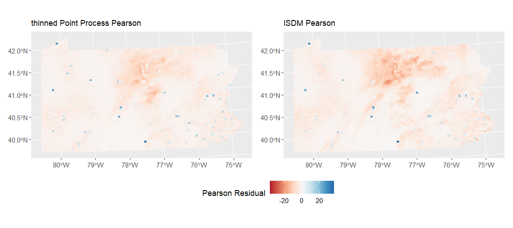
Pearson residuals for thinned PP and ISD models.
Discussion
Over the last decade there has been bloom in the development of tools for fitting ISDMs (with quite a few wrappers around INLA).
Despite their popular use, the increasing adoption of ISDMs calls for careful scrutiny, as these models should not be adopted uncritically.
It is unclear whether an ISDM for the Black-throated Blue Warbler provides any more meaningful information than a point process model.
This example has been presented as a case study for several works.
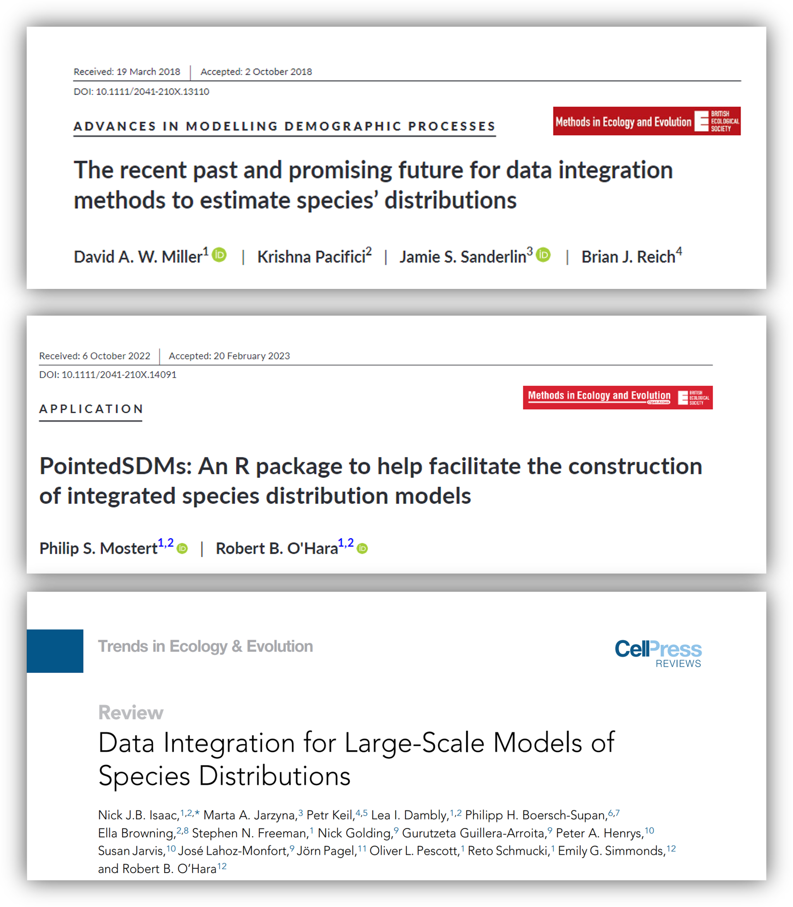
Discussion - further insights
Do parameter-rich integrated models improve our ecological understanding?
In many situations, the vast amount of unstructured data far exceeds the amount of survey data.
Are integrated models even necessary when unstructured data has been adequately modeled?
Discussion - further insights
Do parameter-rich integrated models improve our ecological understanding?
- How do we quantify the information gained by data integration?
In many situations, the vast amount of unstructured data far exceeds the amount of survey data.
Are integrated models even necessary when unstructured data has been adequately modeled?
Discussion - further insights
Do parameter-rich integrated models improve our ecological understanding?
In many situations, the vast amount of unstructured data far exceeds the amount of survey data.
- How can we weight high-quality survey data so that it isn’t overwhelmed by unstructured data?
Are integrated models even necessary when unstructured data has been adequately modeled?
Discussion - further insights
Do parameter-rich integrated models improve our ecological understanding?
In many situations, the vast amount of unstructured data far exceeds the amount of survey data.
Are integrated models even necessary when unstructured data has been adequately modeled?
- How should we evaluate whether biases have been adequately modeled?
Discussion - further insights
Do parameter-rich integrated models improve our ecological understanding?
In many situations, the vast amount of unstructured data far exceeds the amount of survey data.
Are integrated models even necessary when unstructured data has been adequately modeled?
Where do I learn more about INLA and inlabru
Website-tutorials
Discussion forums
Books
Blangiardo, M., & Cameletti, M. (2015). Spatial and spatio-temporal Bayesian models with R-INLA. John Wiley & Sons.
Gómez-Rubio, V. (2020). Bayesian inference with INLA. Chapman and Hall/CRC.
Krainski, E., Gómez-Rubio, V., Bakka, H., Lenzi, A., Castro-Camilo, D., Simpson, D., … & Rue, H. (2018). Advanced spatial modeling with stochastic partial differential equations using R and INLA. Chapman and Hall/CRC.
Wang, X., Yue, Y. R., & Faraway, J. J. (2018). Bayesian regression modeling with INLA. Chapman and Hall/CRC.
Where do I learn more about INLA and inlabru
inlabru workshops
If interested get in touch!📧
Where do I learn more about INLA and inlabru
inlabru book in process
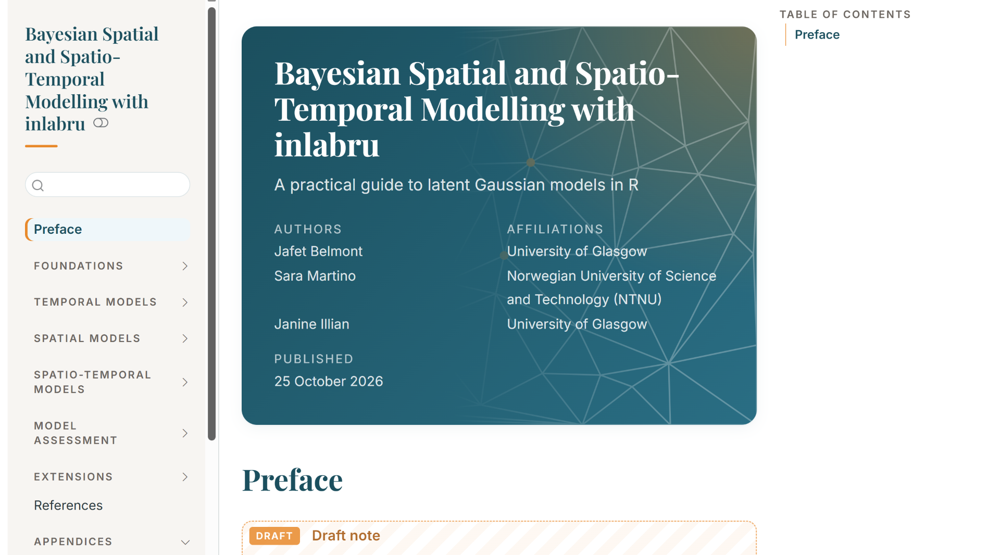
“An understanding of the natural world, and what’s in it as a source of not only great curiosity but great fulfillment.” > Sir. David Attenborough
References
Belmont, Jafet, Sara Martino, Janine Illian, and Håvard Rue. 2024. “Spatio-Temporal Occupancy Models with INLA.” Methods in Ecology and Evolution 15 (11): 2087–100. https://doi.org/10.1111/2041-210x.14422.
Botella, Christophe, Alexis Joly, Pascal Monestiez, Pierre Bonnet, and François Munoz. 2020. “Bias in Presence-Only Niche Models Related to Sampling Effort and Species Niches: Lessons for Background Point Selection.” PLOS ONE 15 (5): e0232078. https://doi.org/10.1371/journal.pone.0232078.
Brown, Mark T., and M. Benjamin Vivas. 2005. “Landscape Development Intensity Index.” Environmental Monitoring and Assessment 101 (1-3): 289–309. https://doi.org/10.1007/s10661-005-0296-6.
Chandler, Richard, and Jeffrey Hepinstall-Cymerman. 2016. “Estimating the Spatial Scales of Landscape Effects on Abundance.” Landscape Ecology 31 (6): 1383–94. https://doi.org/10.1007/s10980-016-0380-z.
Guillera-Arroita, Gurutzeta. 2016. “Modelling of Species Distributions, Range Dynamics and Communities Under Imperfect Detection: Advances, Challenges and Opportunities.” Ecography 40 (2): 281–95. https://doi.org/10.1111/ecog.02445.
Isaac, Nick J. B., Marta A. Jarzyna, Petr Keil, et al. 2020. “Data Integration for Large-Scale Models of Species Distributions.” Trends in Ecology & Evolution 35 (1): 56–67. https://doi.org/10.1016/j.tree.2019.08.006.
Lowe, Erin B., Ben Iuliano, Claudio Gratton, and Anthony R. Ives. 2022. “‘Scalescape’: An r Package for Estimating Distance-Weighted Landscape Effects on an Environmental Response.” Landscape Ecology 37 (7): 1771–85. https://doi.org/10.1007/s10980-022-01437-5.
Mostert, Philip S., and Robert B. O’Hara. 2023. “PointedSDMs: An r Package to Help Facilitate the Construction of Integrated Species Distribution Models.” Methods in Ecology and Evolution 14 (5): 1200–1207. https://doi.org/10.1111/2041-210x.14091.
Simpson, D., J. B. Illian, F. Lindgren, S. H. Sørbye, and H. Rue. 2016. “Going Off Grid: Computationally Efficient Inference for Log-Gaussian Cox Processes.” Biometrika 103 (1): 49–70. https://doi.org/10.1093/biomet/asv064.
Case Study: Scale effect of forest coverage on Parus major
The Swiss breeding bird survey (“Monitoring Häufige Brutvögel” MHB) has monitored the populations of approximately 150 common species since 1999.
The MHB covers 267 1-km squares distributed across Switzerland and involves roughly 200 skilled birdwatchers annually, mainly volunteers.
Surveys are conducted along a transect that does not change over the years and is 4-6 kms in length on average.
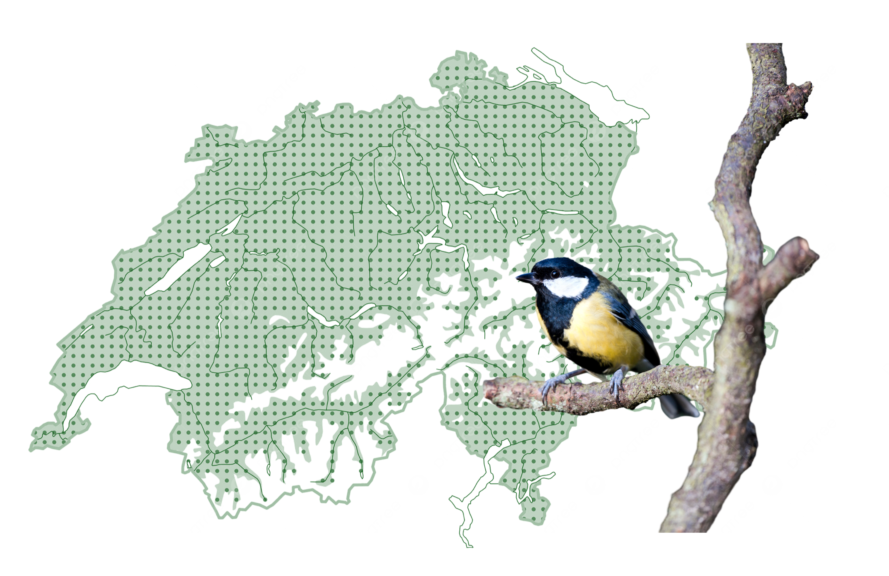
Case Study: Scale effect of forest coverage on Parus major
Buffer analysis using inlabru to determine the effect of forest coverage on the distribution of Parus major
\[ \begin{aligned} y_i &\sim \mathrm{Bernoulli}(\psi_i)\\ \mathrm{logit}(\psi_{i}) &= \beta_0 +\beta_1 \times p_{i,\delta} \end{aligned} \] where \(p_{i,\delta}\) denotes the percentage of the forest landscape in a buffer of radius \(\delta \in 0.5~\text{Km},1~\text{Km}, \ldots, 5~\text{Km}\) centered on site \(i\).
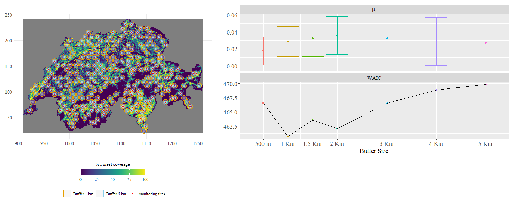
Case Study: Scale effect of forest coverage on Parus major
Distance weighted analysis to determine the effect of forest coverage on the distribution of Parus major
\[ \begin{aligned} y_i &\sim \mathrm{Bernoulli}(\theta_i) \\ \mathrm{logit}(\psi_i) &= \beta_0+ \beta_1 \times f(x(\mathbf{s}_i,\sigma)) \\ f(x(\mathbf{s}_i,\sigma)) & = \sum_{i\neq j} f(\mathbf{s}_j)w(\mathbf{s}_i,\mathbf{s}_j,\sigma) \end{aligned} \] Results
| Parameter | Post. mean and 95% CrIs |
|---|---|
| \(\beta_0\) | 1.01 (0.19, 1.85 ) |
| \(\beta_1\) | 0.01 (-0.01, 0.04) |
| \(\sigma\) | 1.14 (0.03, 4.59) |
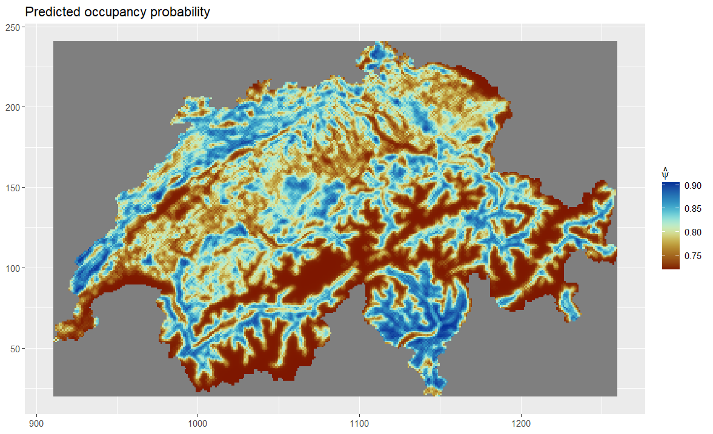
Simulation Study
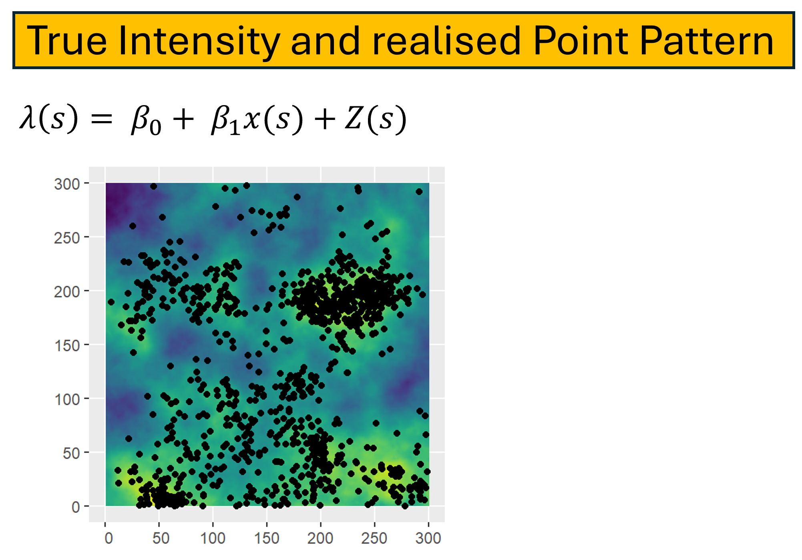
Simulation Study
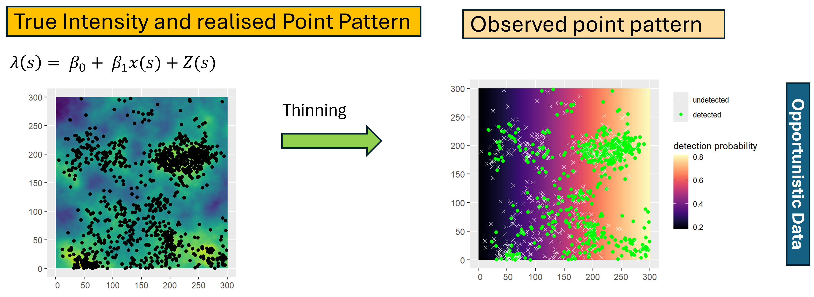
Simulation Study
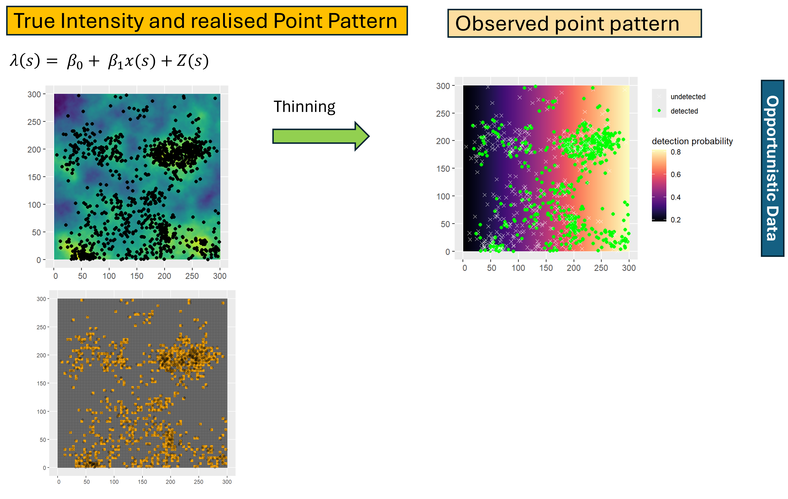
Simulation Study
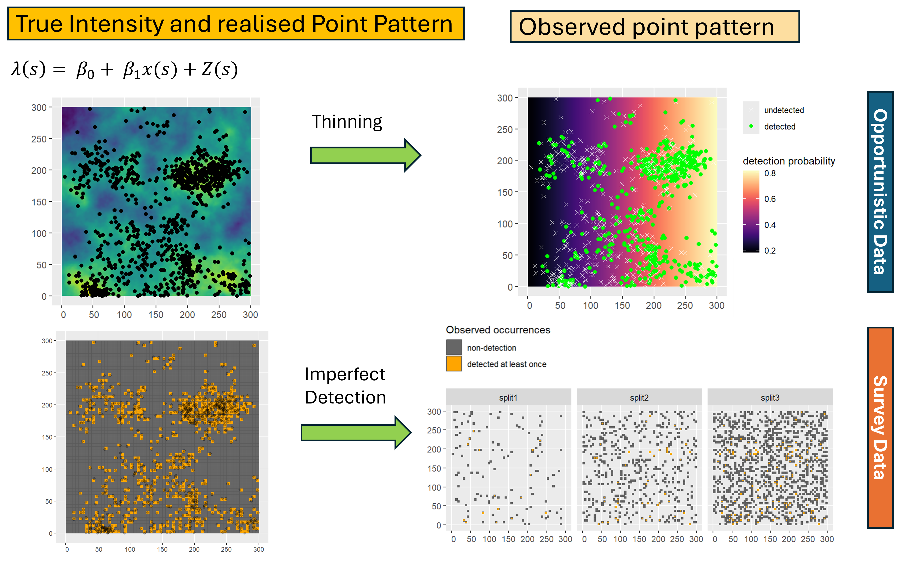
Simulation Study
- Compute MAE and correlation of \(\lambda(s_{obs})\) and \(\hat{\lambda(s_{obs})}\) across 100 data sets for each scenario.
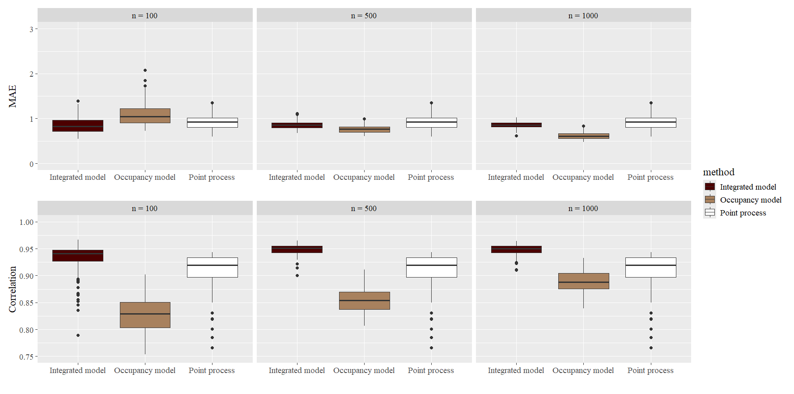